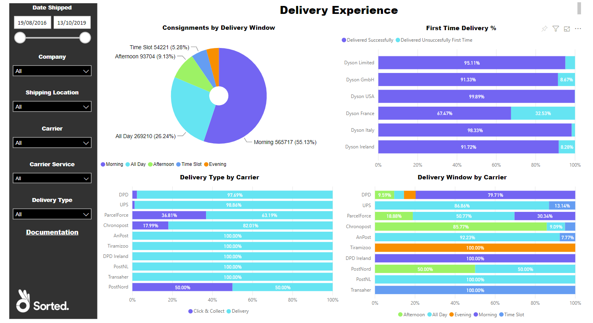
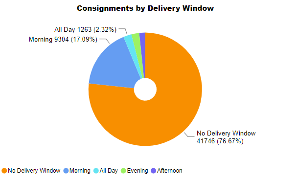
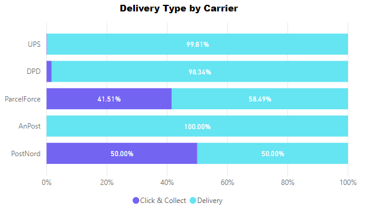
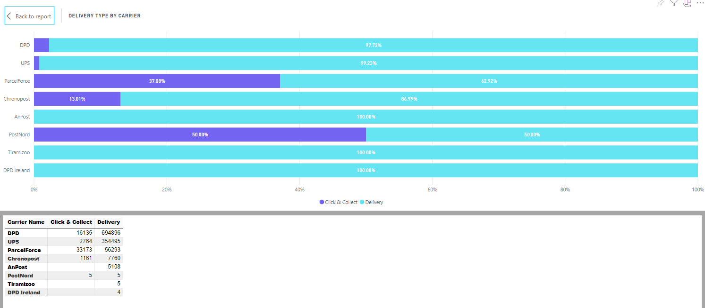
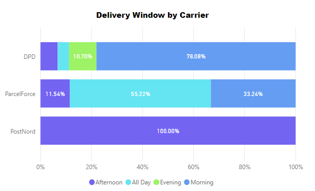

Delivery Experience
The Delivery Experience report enables you to get an overview of the delivery windows and types requested by your customers, as well as how often your carriers were met those delivery promises.
It comprises a Consignments by Delivery Window pie chart, a Delivery Type by Carrier bar chart, and a Delivery Window by Carrier bar chart.
Report Filters
The Delivery Experience report offers the following report-wide filters:
- Date Shipped - enables you to select consignments that were shipped within a given date range.
- Company - where applicable, enables you to select consignments that were shipped by a particular company within your group. You can select multiple companies if required.
- Shipping Location - where applicable, enables you to select consignments that were shipped from a particular shipping location.
- Carrier - enables you to select consignments that were shipped via a particular carrier.
- Carrier Service - enables you to select consignments that were shipped via a particular carrier service.
- Delivery Type - enables you to select consignments that were shipped as a particular delivery type (i.e. Delivery or Click and Collect).

Consignments by Delivery Window
The Consignments by Delivery Window pie chart shows the proportion of your consignments that were scheduled for a daily delivery window, and what delivery window they were scheduled for.
Visual Filters
You can filter the delivery windows displayed on the Consignments by Delivery Window chart using the following filters:
- Consignments (Numerical) - enables you to filter by number of consignments shipped. For example, if you were to filter on is greater than 5000, then only those delivery windows for which you had shipped 5001 or more consignments would be displayed.
- Delivery Window (Basic and Advanced) - enables you to select a specific delivery window or windows to view.
More Options
The following options are available from the More Options menu:
- Open Comments
- Export Data
- Show Data
- Spotlight
- Sort Descending
- Sort Ascending
- Sort by Delivery Window / Consignments
You can also view the records that the visual's data was generated from by right-clicking on it and selecting View Records from the pop-up menu.
Viewing Data

The Consignments by Delivery Window pie chart's Show Data option shows the number of consignments that were scheduled for each delivery window.
Delivery Type by Carrier
The Delivery Type by Carrier chart shows the proportion of each carrier's consignments that used a particular delivery type (for example, Click-and-Collect or Delivery).
Hover your mouse over an area of the chart to see the number of that carrier's consignments that were created with that delivery type.

Visual Filters
You can filter the carriers displayed on the Delivery Type by Carrier chart using the following filters:
- Carrier Name (Basic and Advanced) - enables you to select a carrier or carriers to view.
- Consignments (Numerical) - enables you to filter by number of consignments shipped. For example, if you were to filter on is greater than 5000, then only those carriers with which you had shipped 5001 or more consignments would be displayed.
- Delivery Type (Basic and Advanced) - enables you to select a specific delivery type or types.
More Options
The following options are available from the More Options menu:
- Open Comments
- Export Data
- Show Data
- Spotlight
- Sort Descending
- Sort Ascending
- Sort by Carrier / Consignments
You can also view the records that the visual's data was generated from by right-clicking on it and selecting View Records from the pop-up menu.
Viewing Data
The Delivery Type by Carrier chart's Show Data option shows the number of each carrier's shipments that were sent by each available delivery method.
Delivery Window by Carrier
The Delivery Window by Carrier chart shows, for all consignments with a delivery window specified, what the distribution of delivery windows was by carrier.
For example, in the below chart ParcelForce had 11.54% of their shipments use an afternoon delivery window, 55.22% use an all day delivery window, and 33.24% use a morning delivery window.
Note:
The Delivery Window by Carrier chart ignores consignments with no delivery window specified.
Hover your mouse over an area of the chart to see the number of that carrier's consignments that were assigned that delivery window.

Visual Filters
You can filter the carriers displayed on the Delivery Window by Carrier chart using the following filters:
- Carrier Name (Basic and Advanced) - enables you to select a carrier or carriers to view.
- Consignments (Numerical) - enables you to filter by number of consignments shipped. For example, if you were to filter on is greater than 5000, then only those carriers with which you had shipped 5001 or more consignments would be displayed.
More Options
The following options are available from the More Options menu:
- Open Comments
- Export Data
- Show Data
- Spotlight
- Sort Descending
- Sort Ascending
- Sort by Carrier / Consignments
You can also view the records that the visual's data was generated from by right-clicking on it and selecting View Records from the pop-up menu.
Viewing Data

The Delivery Window by Carrier chart's Show Data option shows the number of each carrier's shipments that were sent via each available delivery method.